American Computing
Every type of computer was born in America
From room-filling mainframes to pocket supercomputers, every fundamental category of computing machine was either invented in the United States or commercialized and scaled to worldwide adoption by American engineers, entrepreneurs, and institutions. Without American ingenuity, the world would still be counting on abacuses.
The processors that built the modern world
Every era of computing has been defined by a breakthrough chip. From the 2,300-transistor 4004 to the 80-billion-transistor H100, American and American-ecosystem engineers designed the processors that doubled in power every two years — just as Moore predicted — and put supercomputers in every pocket, desk, and data center on Earth.
America moved the entire world forward
The history of computing is the history of American ambition. From the U.S. Army funding ENIAC to defeat Nazi Germany, to Bell Labs inventing the transistor, to Silicon Valley building the internet — every decade, American institutions and innovators delivered the breakthrough that made the next era possible.
American companies built the industry from nothing
Not a single country on Earth has produced a technology company of the scale and impact that the United States has — and in computing, America produced dozens of them. IBM, Intel, Apple, Microsoft, and HP didn't just build products; they defined what a computer company is, and the rest of the world followed their lead.
The people who changed everything
Behind every invention is a person. America produced an unmatched concentration of computing pioneers — mathematicians, engineers, programmers, and visionaries who worked in American universities, American government labs, and American garages to give the world something it had never had: the ability to think with machines.
The history of computing is American history
From wartime calculating machines to the AI revolution, the milestones that defined the computer age were conceived, funded, and built in the United States — in Pentagon labs, university basements, Silicon Valley garages, and suburban shopping malls.
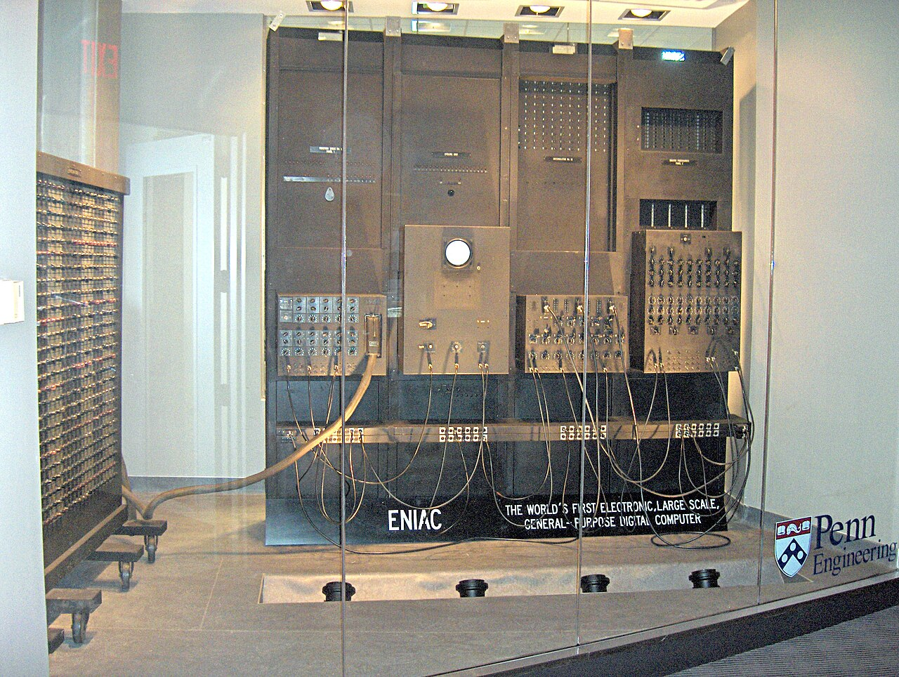
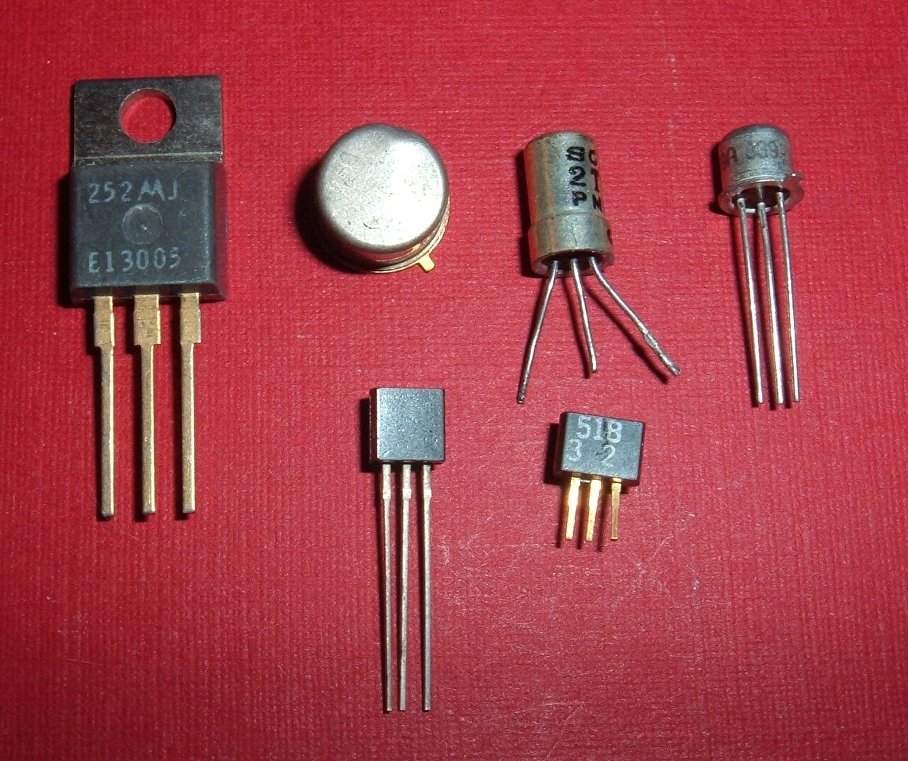

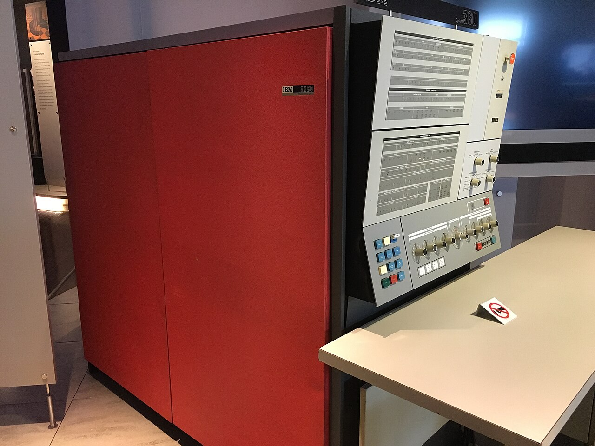
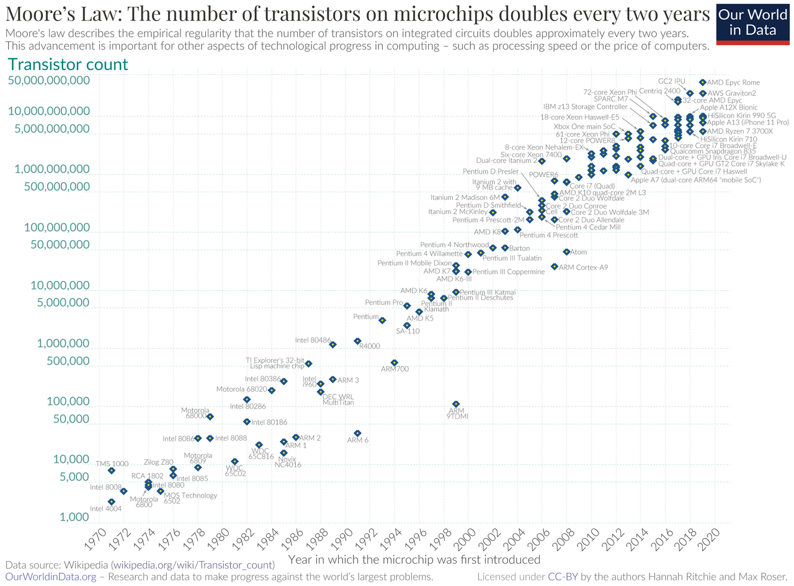

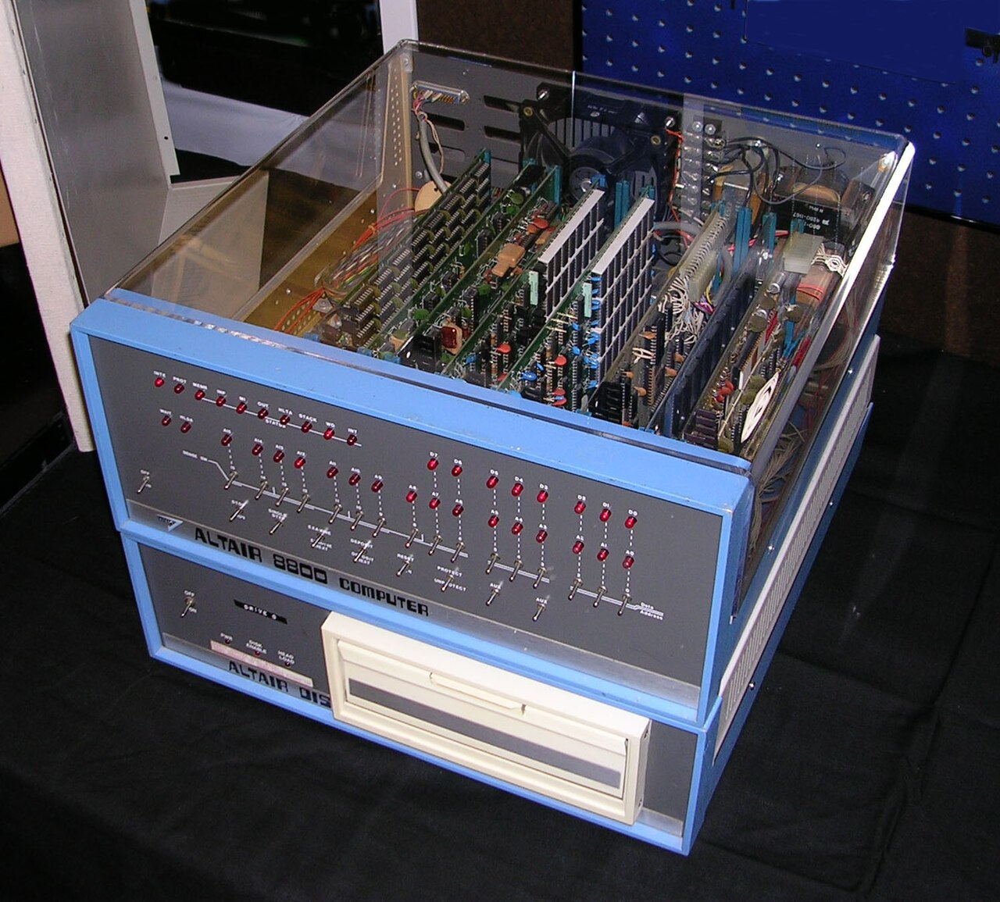
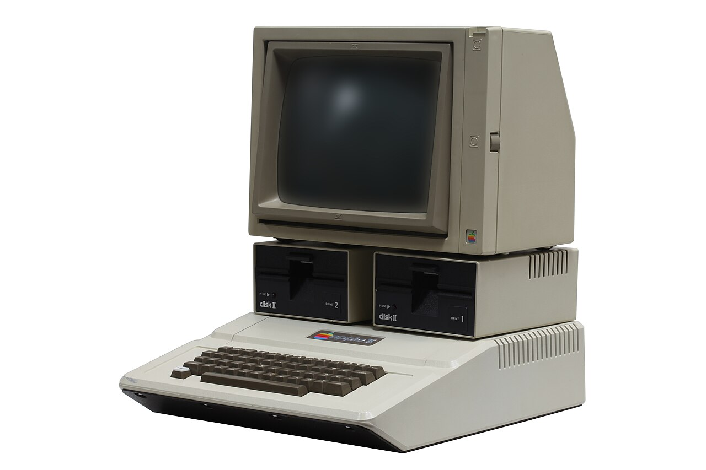
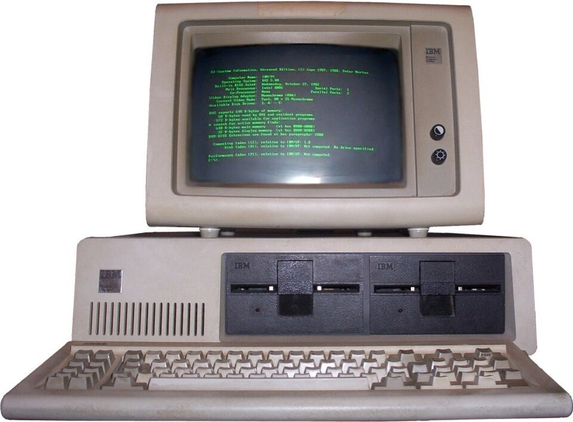
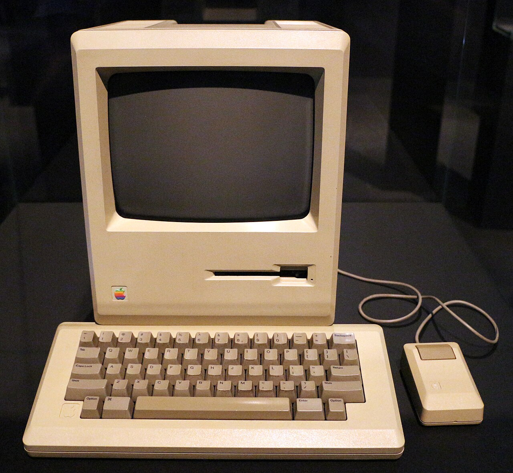
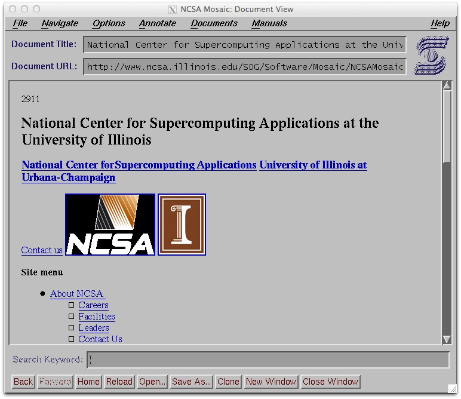
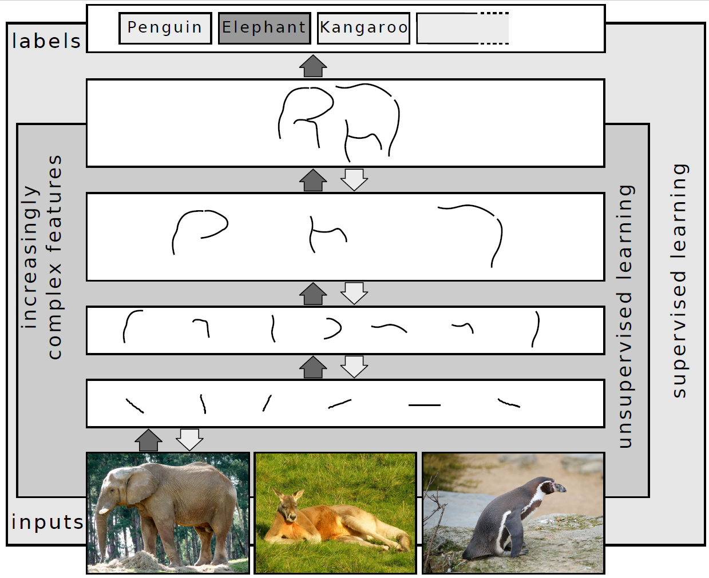
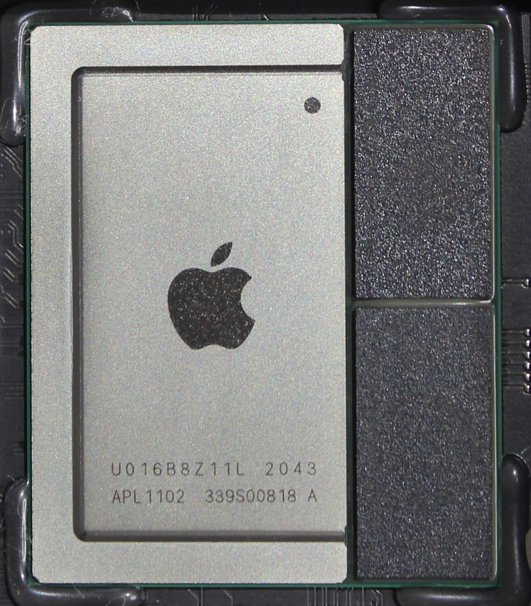